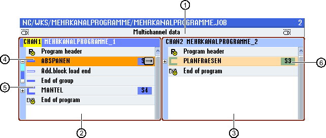

In order to structure programs in order to achieve a higher degree of transparency when preparing for the synchronized view, you have the possibility of combining several blocks (G code and/or ShopTurn machining steps) to form program blocks.
Structuring programs
-
Before generating the actual program, generate a program frame using empty blocks.
-
By forming blocks, structure existing G code or ShopTurn programs.

① | Cross-channel data from the "Multi-channel data" window. |
② | "MULTI-CHANNEL PROGRAMS_1" program opened in channel 1. |
③ | "MULTI-CHANNEL PROGRAMS_2" program opened in channel 2. |
④ | Actual program with block name "Stock removal". The program block has been opened and an Addit. run-in code has been activated. The program block is assigned to the main spindle. |
⑤ | Program block with block name "Peripheral surface". The program block is closed. In order to identify whether an Addit. run-in code is activated or automatic retraction is activated, open the block using the <Cursor right> key. |
⑥ | Program block with block name "Face milling". The program block is assigned to the counter-spindle. The spindle assignment is color coded in order to make a distinction. |
Structured programs in the multi-channel editor
Settings for a program block
Display | Meaning |
|---|---|
Text | Block designation |
Spindle |
|
Addit. run-in code |
|
Automat. retraction |
|
| Note |
Retraction via block functionWhen changing the machining spindle using program blocks, it must be ensured that no collisions occur at/on the machine when positioning. |
Procedure


Opening and closing blocks
Shifting blocks
You have the option of using "Select", "Copy", "Cut-out" and "Paste" softkeys to move individual or several blocks within the program.